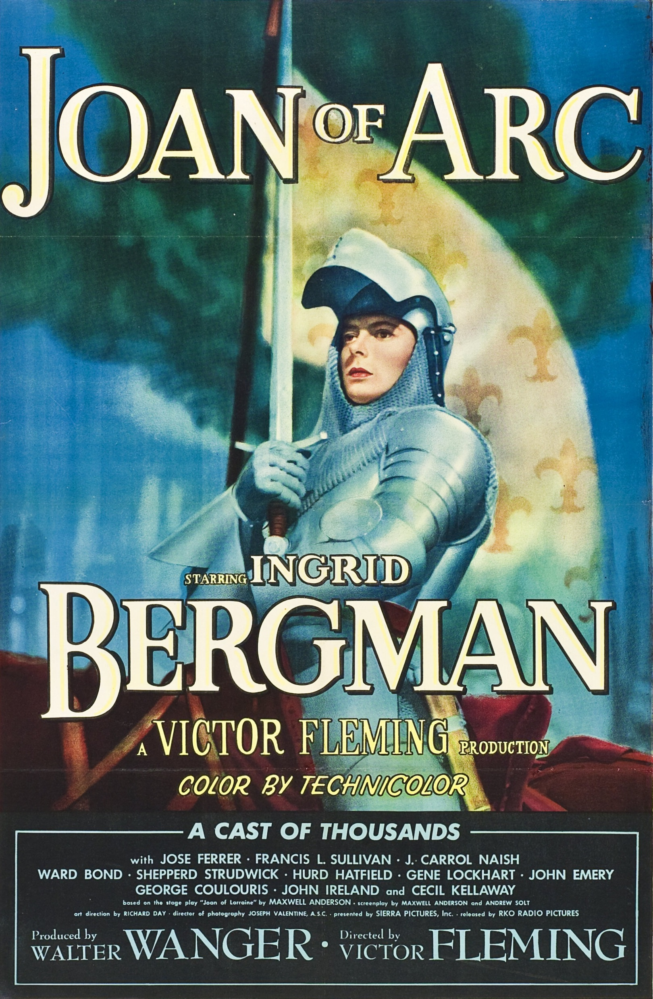

Joan of Arc
21st Academy Awards
(Oscars 1949)
7 Nominations*, 3 Awards*
| Nominations | ||
|---|---|---|
| Category | Nominees | Result |
| Actress | Ingrid Bergman | Nominated |
| Actor in a Supporting Role | José Ferrer | Nominated |
| Cinematography (Color) | Joseph Valentine, William V. Skall, and Winton Hoch | Won |
| Film Editing | Frank Sullivan | Nominated |
| Art Direction (Color) | Edwin Casey Roberts, Joseph Kish, and Richard Day | Nominated |
| Costume Design (Color) | Dorothy Jeakins and Karinska | Won |
| Music (Music Score of a Dramatic or Comedy Picture) | Hugo Friedhofer | Nominated |
| Special Award | Won | |